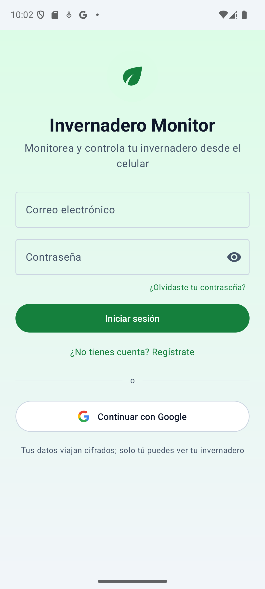
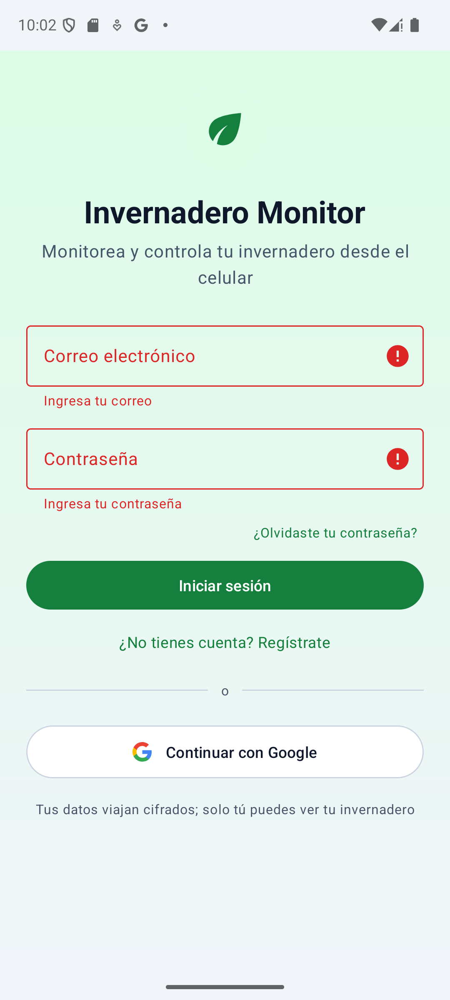
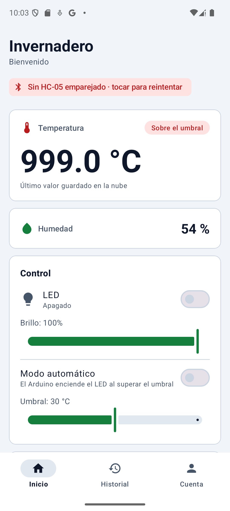
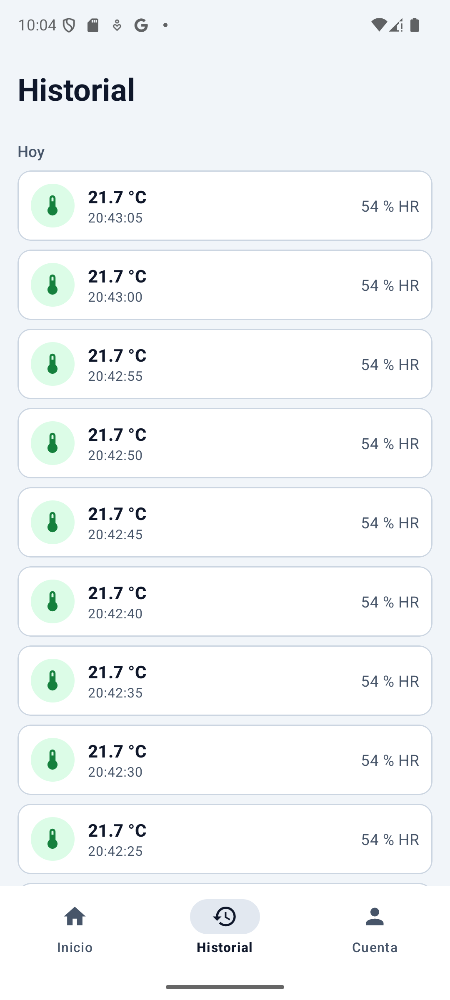
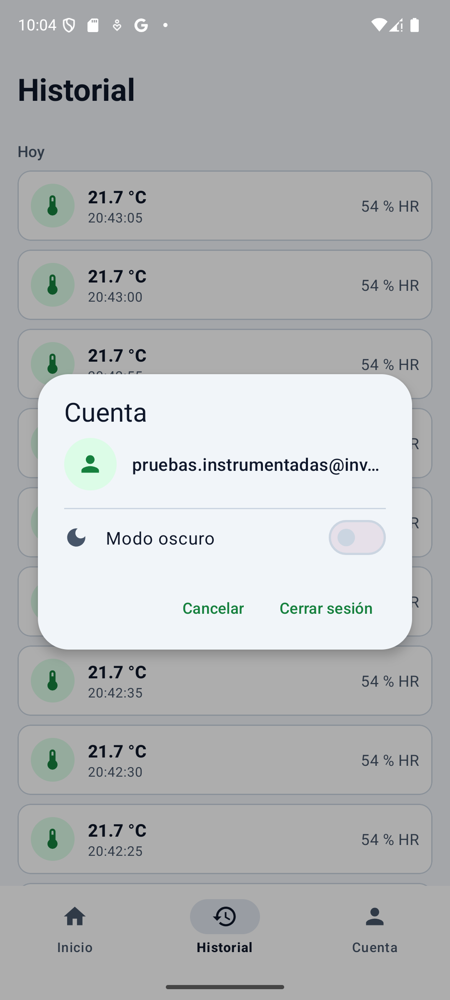
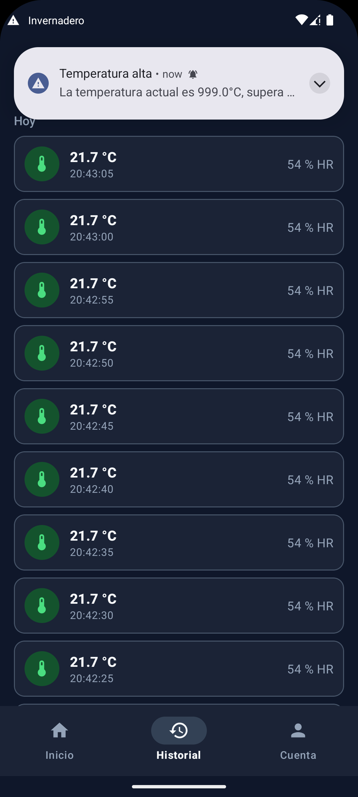
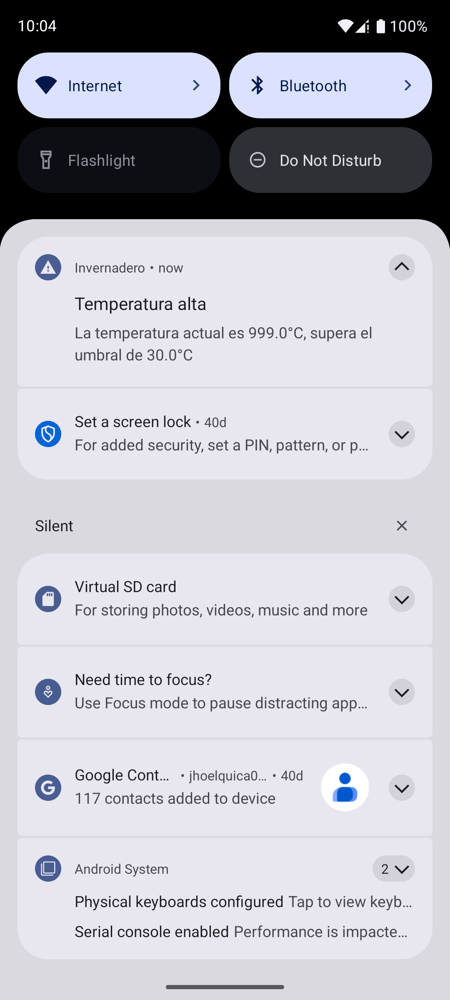
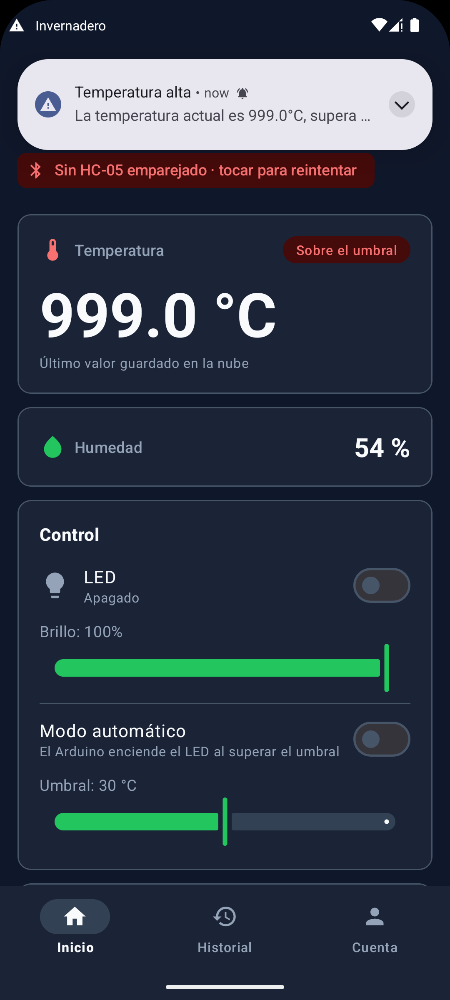

Invernadero Monitor · Validación y Pruebas de Software
Reporte de pruebas de la app: unitarias, sistema e integración
Resultados reales de la corrida del 27/09/2026 sobre com.invernadero.monitor, en un emulador Pixel 8a (Android 15). Para las pruebas de seguridad y rendimiento contra Firebase con JMeter, ver el reporte aparte.
¿Cuál es cuál? (por si viste el reporte crudo de Gradle)
Los tres niveles corren de forma distinta y prueban cosas distintas. Es fácil confundirlos porque Gradle genera un HTML parecido para cada uno.
1
Unitarias (JUnit)Corren en la PC, sin Android real, en segundos. Prueban funciones puras: lógica de umbral, parseo del protocolo Bluetooth, cálculo de estadísticas. Reporte: tests/testDebugUnitTest.
2
Sistema / UI (Espresso)Corren dentro de un emulador o celular real, abriendo pantallas de verdad y tocando botones por código. Prueban que la interfaz se comporte bien. Reporte: androidTests/connected/debug — esta es la captura que mandaste.
3
IntegraciónTambién corren en el emulador, pero en vez de tocar la pantalla, hablan directo con un sistema externo real (aquí, Firebase) usando el mismo SDK que usa la app. Confirman que las piezas realmente se conectan entre sí, no solo que cada una funciona sola.
1. Pruebas unitarias (JUnit + cobertura JaCoCo)
29 pruebas, 0 fallas. La cobertura se mide por clase: la lógica pura (sin Android) llega a 80-100%; las pantallas (Activities) dan 0% aquí porque necesitan un dispositivo — para eso están las pruebas de sistema de abajo.
Pruebas
29
Fallas
0
Cobertura global*
12%
Duración
~1 s
Clase
Qué prueba
Cobertura
ArduinoProtocol
Parseo del protocolo Bluetooth con el Arduino
96%
TemperatureStats
Mínimo/máximo/promedio del día, nivel de alerta
89%
SensorReading
Modelo de una lectura del historial
92%
MainActivity (lógica de umbral)
Cuándo se considera "temperatura alta"
80%
*El 12% "global" incluye todas las Activities y adaptadores (que dan 0% aquí a propósito). No es una cifra de calidad del código, es solo el resultado de mezclar clases que SÍ se pueden probar sin Android con clases que NO.
Detalle de las 29 pruebas (toca cada clase para desplegar):
BluetoothHelperParseTest 11 pruebas
Parsea una línea completa de lectura periódica (T, H, L, M, B, S).
Mantiene compatibilidad con el formato antiguo, solo temperatura.
Parsea el eco de estado sin temperatura.
Ignora retorno de carro y espacios.
Acepta temperaturas negativas dentro de rango.
Reconoce PONG y error de sensor (E:DHT).
Rechaza líneas sin campos válidos.
Descarta campos fuera de rango pero conserva los válidos.
Una línea con solo campos inválidos se descarta por completo.
Los comandos salientes usan el formato correcto del protocolo.
Los comandos limitan los valores al rango permitido.
MainActivityThresholdTest 8 pruebas
Temperatura por debajo del umbral no se considera alta.
Temperatura igual al umbral no se considera alta.
Temperatura por encima del umbral sí se considera alta.
Usa el umbral por defecto cuando no se especifica uno.
No dispara alerta si no hay lectura previa y está dentro del rango.
Dispara alerta la primera vez que la temperatura cruza el umbral.
No repite la alerta si la temperatura se mantiene alta.
Dispara nuevamente si la temperatura baja y vuelve a subir.
TemperatureStatsTest 5 pruebas
Calcula mínimo, máximo y promedio del día correctamente.
Solo considera lecturas desde el inicio del período indicado.
Devuelve null si no hay lecturas en el período.
El inicio del día es medianoche en hora local.
Calcula bien el nivel de alerta respecto al umbral.
SensorReadingTest 4 pruebas
El constructor sin argumentos usa valores por defecto (requisito de Firebase).
Dos lecturas con los mismos datos son iguales.
Lecturas con distinto valor no son iguales.
copy() genera una variante manteniendo el resto de campos.
ExampleUnitTest 1 prueba
Prueba de ejemplo generada por el asistente de Android Studio (2+2=4).
2. Pruebas de sistema / UI (Espresso, en el emulador)
12 pruebas, 100% exitosas. Cada una abre una pantalla real de la app y verifica que se vea y se comporte como debe.
Pruebas
12
Fallas
0
Éxito
100%
Duración
15.5 s
Clase
Qué verifica
Pruebas
Resultado
LoginActivityTest
Validación del formulario, alternar login/registro
5
✓ 100%
MainActivityTest
Pantalla principal completa, navegación a Historial
2
✓ 100%
HistoryActivityTest
Pantalla accesible sin sesión, lista o vacío
2
✓ 100%
FirebaseIntegrationTest
Ver sección 3 abajo
2
✓ 100%
ExampleInstrumentedTest
Prueba de ejemplo del asistente de Android Studio
1
✓ 100%
Detalle de las 12 pruebas (toca cada clase para desplegar):
LoginActivityTest 5 pruebas
Los elementos principales del login son visibles (correo, contraseña, botones).
Formulario vacío: al tocar "Iniciar sesión" se muestran errores en ambos campos.
Correo inválido: muestra el error solo en el campo de correo.
Contraseña corta: muestra el error solo en el campo de contraseña.
Al tocar "Regístrate" cambian los textos del botón y del enlace a modo registro.
MainActivityTest 2 pruebas
Los elementos principales son visibles (temperatura, LED, brillo, umbral, gráfico, nav inferior).
Tocar "Historial" en la navegación abre HistoryActivity correctamente.
HistoryActivityTest 2 pruebas
El título y la navegación inferior son visibles sin necesidad de sesión iniciada.
Siempre se muestra exactamente uno de: la lista de lecturas o el estado vacío.
FirebaseIntegrationTest 2 pruebas
Escritura y lectura autenticada: el dato leído coincide exactamente con el original.
Escritura sin autenticar: Firebase la rechaza, confirmado desde el SDK real de la app.
ExampleInstrumentedTest 1 prueba
El contexto de la app tiene el paquete correcto (com.invernadero.monitor).
3. Prueba de integración (FirebaseIntegrationTest)
A diferencia de JMeter (que le habla a Firebase por HTTP crudo), esta prueba usa el mismo SDK de Android que usa la app real, para confirmar que las piezas conectan de verdad.
Caso
Qué hace
Resultado
Escritura y lectura autenticada
Guarda una lectura de temperatura real en Firebase, la vuelve a leer, y compara que sea exactamente igual a la original
✓ Coincide
Escritura sin autenticar
Cierra sesión y trata de escribir; confirma que Firebase lo rechace, igual que probamos con JMeter pero esta vez desde la app misma
✓ Rechazada
Evidencia visual (capturas reales del emulador)
Recorrido completo capturado mientras corrían las pruebas: login, validación, pantalla principal, historial, cuenta y modo oscuro.

Login

Validación de campos

Pantalla principal

Historial (datos reales)

Diálogo de Cuenta

Modo oscuro aplicado

Notificación de alerta

Notificación abre la app
Hallazgo del entorno de pruebas. El servicio de autocompletado de Google (Autofill) en el emulador interfería con Espresso: mostraba el diálogo "¿Guardar contraseña?" al cerrar una pantalla con el campo de contraseña lleno, y ese diálogo le robaba el foco a la siguiente pantalla y hacía fallar la prueba siguiente. Se desactivó el servicio de autofill y las animaciones del sistema en el emulador antes de correr las pruebas — es una recomendación oficial de configuración de entorno para Espresso, no un bug de la app.